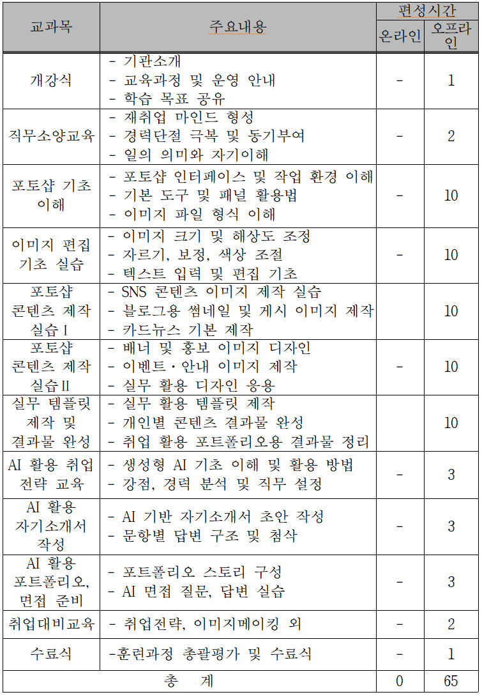

이 프로그램은 무엇인가요?
경력단절 여성을 대상으로 포토샵 실무 역량을 중심으로 강화하고, 마지막에 AI를 활용한 취업 준비(자기소개서·면접·포트폴리오)까지 연결하는 재취업 지원 과정입니다. QR로 들어오신 분이 한 번에 이해할 수 있도록 핵심만 정리했습니다.
포토샵 실무 중심
- SNS·블로그·홈페이지용 이미지 제작
- 썸네일·배너·홍보물 등 실무 콘텐츠 실습
- 실무 템플릿 제작 및 결과물 완성
취업까지 연결
- AI 활용 자기소개서 초안 작성 & 문항별 첨삭
- AI 면접 질문·답변 실습
- 결과물 정리 → 취업용 포트폴리오 구성
이런 분께 추천
- 재취업을 준비 중인 경력단절 여성
- 사무·행정·홍보·경영지원 직무 관심자
- 실습 위주로 “바로 써먹는” 교육을 원하는 분
교육내용 한눈에 보기
아래 표는 전체 교육 구성을 요약한 자료입니다. (총 65시간)

강의계획표
사업계획서에 수록된 강의계획표를 그대로 반영했습니다.
| 회차 | 구분 | 학습 단계 | 수업 운영 내용 | 산출물/성과 |
|---|---|---|---|---|
| 1 | 오리엔테이션 | 과정 이해 | -교육 목표·진행 방식 안내 -디지털 직무 이해 및 사례 소개 | 개인 학습 목표 설정 |
| 소양 교육 | 취업 준비 인식 개선 | - 경력단절 극복 워크숍 재취업 사례 공유 | 개인 경력 정리 시트 | |
| 2 | 포토샵 실무 | 기초 이해 | - 포토샵 역할 및 활용 사례 이해 - 인터페이스 구성 및 작업 환경 설정 | 개인 작업 환경 세팅 |
| 3 | 기본 도구 실습 (선택·이동·자르기) 레이어 개념 이해 | 레이어 활용 편집 이미지 | ||
| 4 | - 이미지 파일 형식 이해(JPG·PNG 등) 저장 방식 및 해상도 개념 | 목적별 저장 파일 | ||
| 5 | 기초 이해(보완) | 기초 기능 복습 및 질의응답 실습 오류 수정 | 기초 기능 숙련 | |
| 6 | 포토샵 실무 | 편집 기초 실습 | - 이미지 크기·해상 도 조정 실습 온라인/출력용 이미지 구분 | 규격 맞춘 이미지 |
| 7 | 밝기·대비·색상 보정 실습 | 보정 전·후 이미지 | ||
| 8 | - 텍스트 입력 및 편집 가독성 있는 배치 실습 | 텍스트 포함 이미지 | ||
| 9 | 편집 기초 실습(보완) | 이미지 편집 종합 복습 개인별 수정 피드백 | 편집 완성 이미지 | |
| 10 | 콘텐츠 제작 실습 | SNS 콘텐츠 특성 이해 콘텐츠 기획 및 레이아웃 구성 | SNS 콘텐츠 기획안 | |
| 11 | - SNS 게시용 이미지 제작 실습 | SNS 게시 이미지 | ||
| 12 | - 블로그 썸네일 제작 실습 | 블로그 썸네일 | ||
| 13 | 콘텐츠 제작 실습(보완) | 콘텐츠 피드백 및 수정 | 완성 콘텐츠 | |
| 14 | 실무 디자인 적용 | 배너 디자인 이해 홍보용 이미지 제작 | 배너 이미지 | |
| 15 | 이벤트·안내 이미지 제작 실무 사례 적용 | 안내 이미지 | ||
| 16 | 실무 디자인 적용(보완) | 실무 디자인 응용 및 수정 | 실무 디자인 결과물 | |
| 17 | 결과물 완성 | 실무 활용 템플릿 제작 | 개인 템플릿 | |
| 18 | 개인 콘텐츠 결과물 정리 및 보완 | 콘텐츠 묶음 | ||
| 19 | 취업 활용 포트폴리오용 결과물 정리 | 포토샵 포트폴리오 | ||
| 20 | AI 활용 취업 | 취업 전략 이해 | 생성형 AI 개요 및 활용 목적 이해 AI 활용 시 유의사항 및 윤리 개인 강점·경력 분석 실습 | 개인 강점·경력 정리 시트 |
| 21 | 자기소개서 작성 | AI 기반 자기소개서 초안 작성 문항별 답변 구조 이해 AI 결과물 수정·보완 방법 | 자기소개서 초안 | |
| 22 | 포트폴리오·면접 준비 | 포트폴리오 스토리 구성 실습 AI 면접 질문 생성 및 답변 연습 면접 상황별 대응 전략 | 면접 답변 스크립트 | |
| 23 | 취업 대비 | 취업 준비 마무리 | 개인별 취업 목표 점검 지원 직무 및 취업 전략 정리 이력서·자기소개서·포트폴리오 최종 점검 면접 이미지 메이킹 및 태도 교육 | 취업 준비 체크리스트 |
| 수료 | 성과 정리 | 교욱 과정 성과 공유 개인별 결과물 리뷰 수료식 및 향후 취업 연계 안내 | 최종 결과물 정리본 |
운영방식
- 기간/시간: 2개월 · 총 65시간 (주 3회, 회당 3시간) *개강식(1h), 직무소양(2h) 포함
- 진행형태: 오프라인 실습 중심(개인 실습 + 강사 피드백), 과제/결과물 누적 방식
- 학습방식: 기초→편집→콘텐츠 제작→템플릿 완성→취업자료 정리 순서로 단계별 운영
- 성과관리: 출결/과제/결과물 점검, 수료 전 결과물 정리 및 취업 준비 연계
수료 후 기대효과
- 실무 바로 적용: SNS·블로그·홈페이지용 홍보 이미지/배너/썸네일 등을 스스로 제작·수정 가능
- 결과물 확보: 교육 과정에서 만든 콘텐츠를 묶어 취업 활용 포트폴리오로 정리
- 취업 준비 완성: AI를 활용해 자기소개서 초안 작성·첨삭, 면접 질문/답변 연습까지 연결
- 재취업 자신감: 디지털 실무 역량과 취업 준비를 동시에 갖춰 구직 활동의 부담을 낮춤